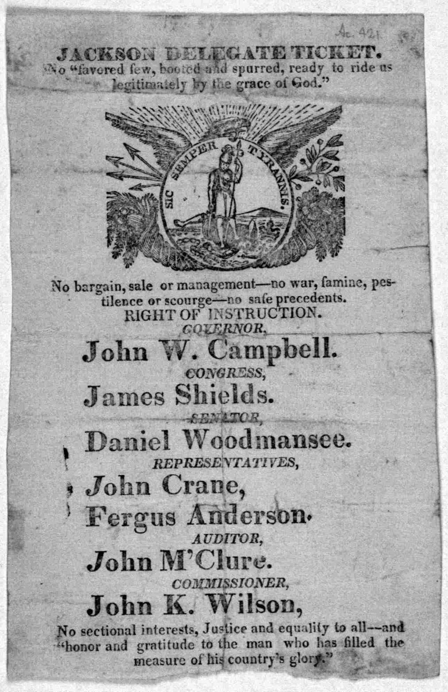

| Field | Detail |
| TOC Fit | Chapter 9 · Essay prompt 9.5 (Why Jackson Won in 1828) |
| Why Here | A local Jacksonian ballot that packs the campaign’s arguments into a few slogans: no aristocracy, no “bargain,” the voters’ “right of instruction,” and gratitude to the hero. Students can weigh how much of the appeal was about popular power, how much about Jackson’s fame, and how a party slate was presented to voters. |
| Treatment | Public-domain text, complete |
Ohio’s state and county elections in October 1828 came weeks before the presidential vote, and both parties used them as a test of strength. Party tickets were printed slips that voters carried to the polls and deposited as their ballots; there was no official government ballot in 1828. This ticket lists Jacksonian candidates for governor (John W. Campbell), Congress (James Shields, who represented the Butler County district), the state legislature, and county offices. Its slogans borrow from Thomas Jefferson. The line about a “favored few, booted and spurred” echoes Jefferson’s last public letter (June 1826), which said that the mass of mankind had not been born with saddles on their backs. The closing quotation repeats praise of Jackson as the man “who has filled the measure of his country’s glory,” words attributed to Jefferson. The “right of instruction” was the doctrine that voters could direct their representatives how to vote. Editorial note. Reproduced complete from the Library of Congress machine-readable transcription (American Memory, 1999) of the ticket in the Printed Ephemera Collection (Portfolio 186, Folder 12). The Library dates the item “[1828?]”; John W. Campbell’s candidacy for governor fits October 1828. The district identification is based on the candidates’ names and should be treated as probable. The Norton Source Collection does not include this item. |
|
 |
|
UNIT 3 · AN EXPANDING NATION | HISTORY B17A | DANIEL GARZA, M.A.
|